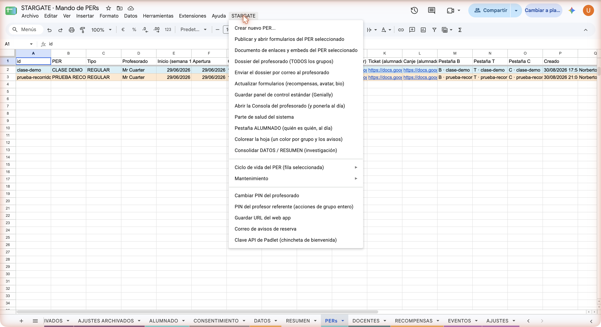
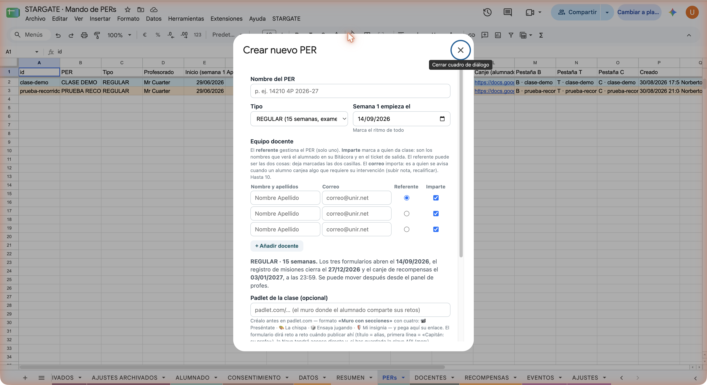
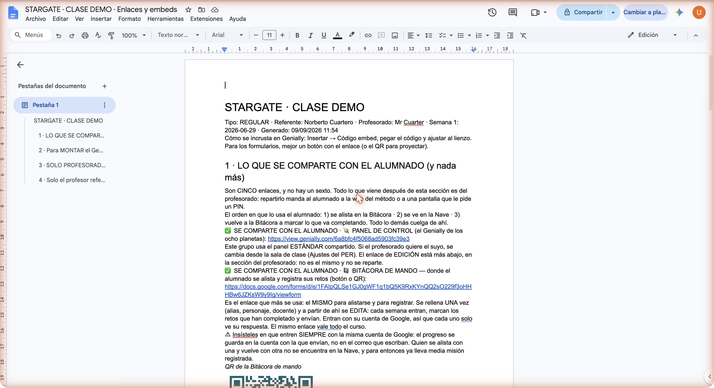
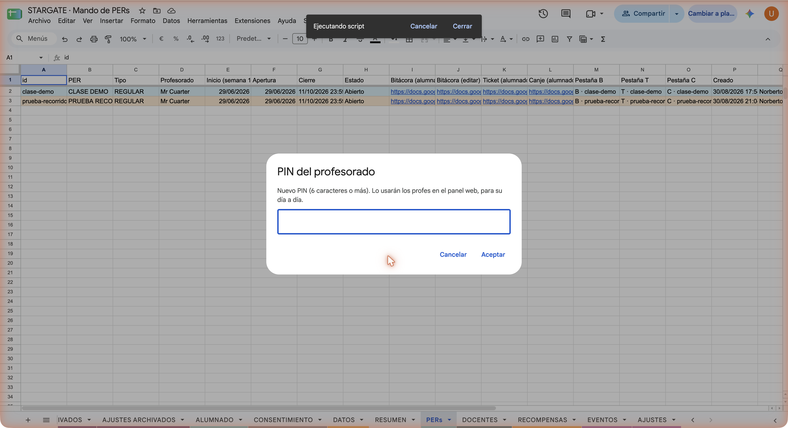
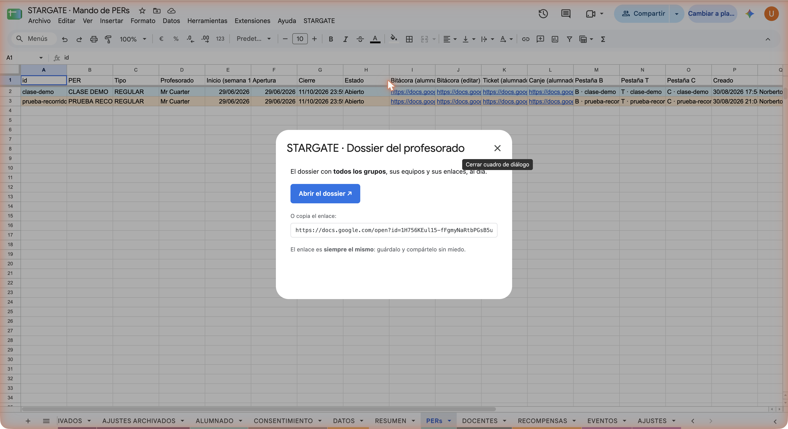
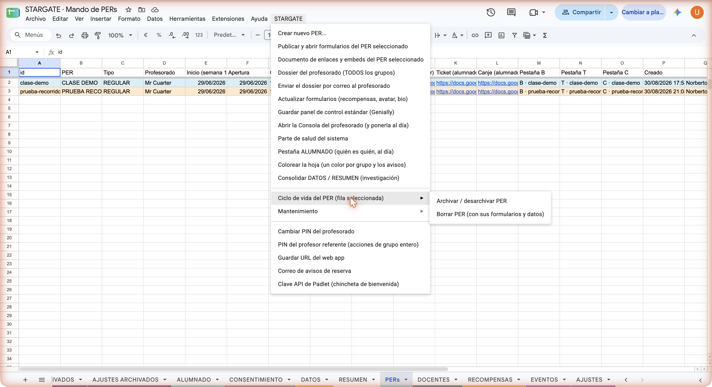

Durante un año STARGATE vivió dentro de una hoja de cálculo de Google con un menú propio y tres formularios por grupo. Funcionaba. Esta página cuenta cómo era, qué pasó con los grupos que la usaban y cómo volver atrás si algún día hiciera falta.
Si buscas cómo se crea un grupo hoy, está en Cómo se hace.
El menú STARGATE de la hoja, los tres formularios por grupo (Bitácora, canje y ticket), el documento de enlaces, los dos PIN y el dossier del profesorado. Nada de eso hace falta ya: un grupo se crea desde la consola del referente y se gobierna desde el puesto de mando.
Los grupos que ya estaban corriendo. No se han tocado ni se van a migrar a la fuerza: su
Nave, su tablero y su sala funcionan igual que ayer. La web sabe con qué motor hablar en cada caso, y
un grupo viejo se abre añadiendo ?motor=apps si hiciera falta forzarlo.
No fue por gusto. Apps Script tiene un techo de 30 ejecuciones a la vez, y el máster mete unos 200 estudiantes por grupo con grupos solapados. El día que una clase entera abriera la Nave a la vez, el primero esperaba y el resto recibía un error. Calcular el tablero costaba entre 2 y 10 segundos y había que recalcularlo entero para devolver una ficha.
Lo que hay debajo ahora es el motor de GamificaPro —Firestore y funciones en servidor—, que no tiene ese techo. STARGATE conserva su cara: la misma web, los mismos retos, las mismas insignias. Por dentro cambia quién lleva las cuentas.
Donde estaban. La hoja maestra sigue en la cuenta de la asignatura con sus pestañas de respuestas, y los formularios de los grupos que la usan siguen abiertos. No se ha borrado ni una fila.
Los tickets de salida son la excepción, y a mejor: desde ahora se recogen en una hoja propia, compartida por todos los grupos y todos los años, para que la hoja maestra se pueda congelar el día que toque sin arrastrar nada.
Estas capturas se conservan porque explican de dónde viene el sistema. Las pantallas que retratan siguen existiendo para los grupos antiguos.






El motor viejo no se ha apagado. La web decide con qué hablar mediante un interruptor, y se puede forzar visita a visita:
?motor=apps — el sistema de siempre, con su hoja y sus formularios.?motor=firestore — el motor nuevo.Eso significa que un problema en el motor nuevo no deja a nadie tirado: se vuelve al de siempre mientras se arregla. Ese fue el requisito desde el primer día, y por eso el traductor devuelve exactamente el mismo tablero que devolvía la hoja.